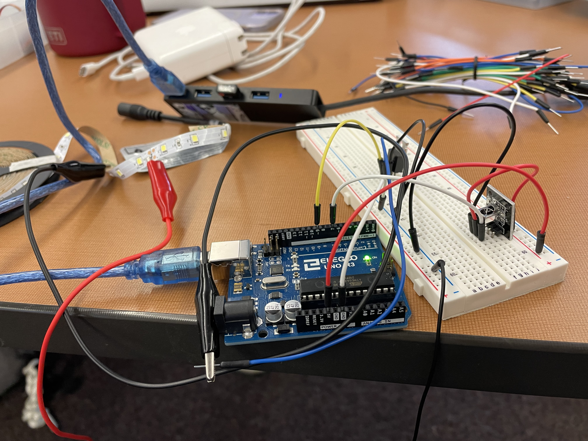
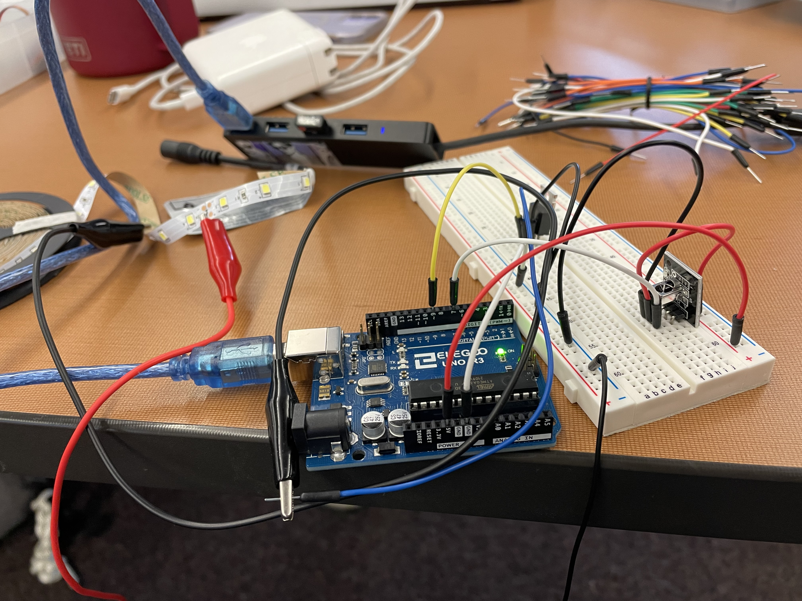
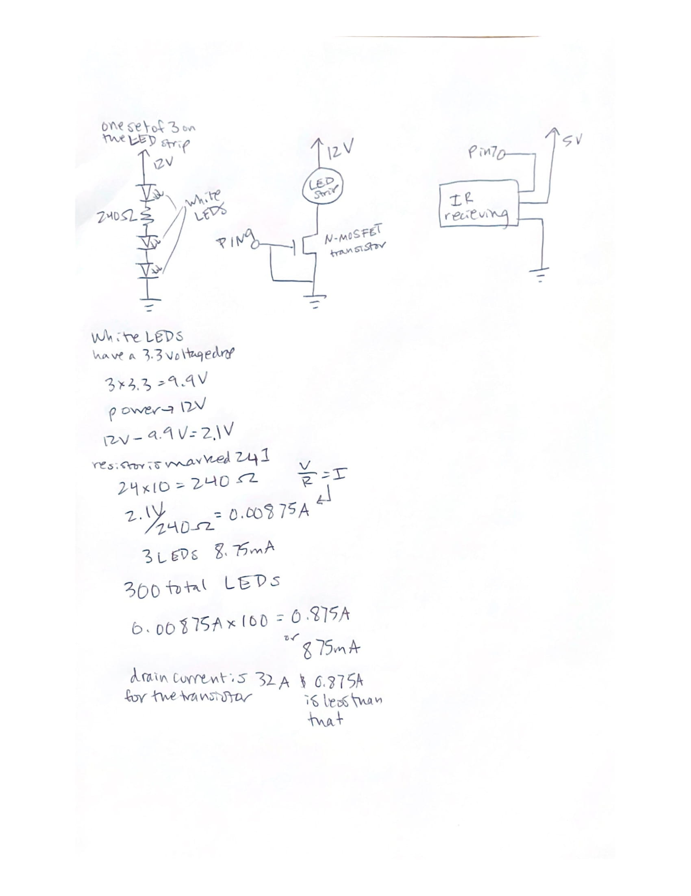
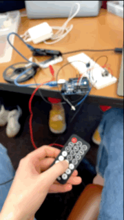

Alissa Acheson's Assignment 6!
 

Above is the circuit that contains the IR reciever module and the LED strip LEDs, the LED strip is made up of 300 white LEDs, each set of 3 has a 240 ohm resistor. Not pictured is the IR remote that communicates with the IR receiver module.

Above is the calculations for the amount of current used by the LEDs to justify the transistor use and the schematic of the circuits used.
Below is the Ardunio code that the board is using, fading the LEDs on and off red when 5 is pressed and yellow when 2 is pressed.
Arduino Code for the joystick
//joystick code to communicate with web
int x = A0; // x positon of joystick A0 pin
int y = A1; // y positon of joystick A1 pin
int xval = 0; // sart at 0
int yval = 0; // start at 0
void setup() {
// start serial at 9600 baud
Serial.begin(9600);
// set the timeout for parseInt
Serial.setTimeout(10);
}
void loop() {
// read A0 pin
xval = analogRead(x);
// read A1 pin
yval = analogRead(y);
// all below prints to console
Serial.print("[");
Serial.print(xval);
Serial.print(",");
Serial.print(yval);
Serial.println("]");
}
P5 Code for the joystick
//the pieces of the code below was referenced from https://github.com/machineagency/hcde439/blob/master/p5-examples-and-addons/hcde439-example2/sketch.js
var serial; // variable to hold an instance of the serialport library
var portName = 'COM5' //rename to the name of your port
var dataarray = []; //some data coming in over serial!
var xPos = 0;
function setup() {
serial = new p5.SerialPort(); // make a new instance of the serialport library
serial.on('list', printList); // set a callback function for the serialport list event
serial.on('connected', serverConnected); // callback for connecting to the server
serial.on('open', portOpen); // callback for the port opening
serial.on('data', serialEvent); // callback for when new data arrives
serial.on('error', serialError); // callback for errors
serial.on('close', portClose); // callback for the port closing
serial.list(); // list the serial ports
serial.open(portName); // open a serial port
createCanvas(1200, 800);
background(156,175,136);;
}
// get the list of ports:
function printList(portList) {
// portList is an array of serial port names
for (var i = 0; i < portList.length; i++) {
// Display the list the console:
print(i + " " + portList[i]);
}
}
function serverConnected() {
print('connected to server.');
}
function portOpen() {
print('the serial port opened.')
}
function serialError(err) {
print('Something went wrong with the serial port. ' + err);
}
function portClose() {
print('The serial port closed.');
}
function serialEvent() {
if (serial.available()) {
var datastring = serial.readLine(); // readin some serial
var newarray;
try {
newarray = JSON.parse(datastring); // can we parse the serial
} catch(err) {
//console.log(err);
}
if (typeof(newarray) == 'object') {
dataarray = newarray;
}
console.log("got back " + datastring);
}
}
function graphData(newData) {
// map the range of the input to the window height:
var yPos = map(newData, 0, 1023, 0, height);
// draw the line
line(xPos, height, xPos, height - yPos);
// at the edge of the screen, go back to the beginning:
if (xPos >= width) {
xPos = 0;
// reset the background:
background(156,175,136); // sage green background
} else {
// pass
}
}
function draw() {
stroke('rgb(204,85,0)'); // burnt orange
graphData(dataarray[0]);
stroke('rgb(255,165,0)'); // orange
graphData(dataarray[1]);
xPos++;
}
Below is the final operation, the joystick position affects the height and color of the webpage.
